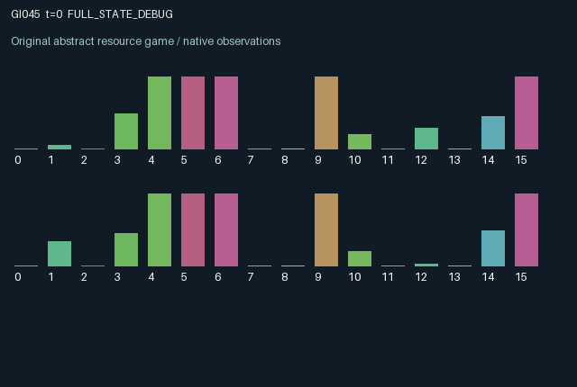

GI045 / LEGACY_ARRAY
astra-d2-00045: Coupled oscillators with paid measurement and polarity memory
2 agents5 actions16 observation columns32 original horizonRuntime: PASS
Release verification episode
Untrained uniform legal actions. Actual JAX state sampled along the full original episode; full-state debug camera. No human performance or learning claim.

Run this game
crucibles play --game 45
Start Python locally, then open the address printed by the terminal. Installation, multiplayer, takeover and keyboard controls →
Objective, rewards & ending
Exact task contract
{
"termination": "Original kernel t >= 32; see mechanism and source"
}Declared per-step reward bounds: -1.0 to 1.0. Observability: source_defined.
Rules
Original mechanism document (historical status wording retained)
# astra-d2-00045: Coupled oscillators with paid measurement and polarity memory Status: original parentless source proposal; runtime behavior has not been executed by the author. Each role controls one bounded oscillator and privately sees its own sinusoidal tracking target and one-step target preview. The five actions are coast, positive impulse, negative impulse, invert its incoming coupling polarity, and brake while measuring the other oscillator. Impulses, switching, and measurements require local stored energy. Coasting recovers energy more quickly. All action indices are legal; an unaffordable intervention has no actuation effect. Velocity persists, is damped, and responds to local restoring force, the other oscillator's previous position, and the current local impulse. Position integrates that velocity. A polarity switch changes the stored sign of future incoming coupling, not the current transition's force. Thus each role can affect the other's later tracking through its physical trajectory, while polarity changes alter how a role responds to that trajectory. The polarity is directed rather than a symmetric physical spring; this is a synthetic control mechanism, not a claim of a faithful mechanical model. Position and velocity saturate at declared bounds. Braking halves the computed local velocity and simultaneously acquires a post-transition measurement of the other position and velocity. That observation is available only after the action and then becomes stale until refreshed. Public information includes both polarities, both energy reserves, and unsigned strain between positions. Strain can partially reveal the other position but does not directly disclose its target. The reward also supplies indirect information about local tracking, so this is partial observation with structured leakage rather than perfect privacy. The 16 observation columns are time, local position, local velocity, local target, local energy, local and other polarity, cached other position and velocity, cache age, public strain, preceding impulse, local tracking error, preceding reward, local target preview, and other energy. Normalizers are fixed. Randomness is confined to explicit-key initial positions and target phases; transitions thereafter are deterministic conditional on joint actions. Reward is tanh of a tracking-quality offset minus squared position error, squared velocity, and actuation costs. This analytically bounds each reward within [-1, 1] without claiming measured learning results. Dynamics and observation persist through transition 32; the terminal state is not reset. The proposal relates to familiar coupled control systems, delayed sensing, and active sensing. Its candidate mechanism couples second-order state persistence, action-controlled directed coupling signs, and a measurement action with a physical braking consequence. No uniqueness theorem, compiler result, mechanism-eligibility judgment, benchmark comparison, or learning effectiveness is asserted. No parent or feedback evidence was supplied.
Commands
0Action 0; see mechanism and source
1Action 1; see mechanism and source
2Action 2; see mechanism and source
3Action 3; see mechanism and source
4Action 4; see mechanism and source
Roles & abilities
agent_0 Original legacy agent; see mechanism and source
agent_1 Original legacy agent; see mechanism and source
Observation permissions
Training receives only the original observation rows. Role cameras use declared visibility; debug cameras are explicitly marked. Local benchmark records log debug exposure and role takeover history.
Exact observation layout
[]
Entity visibility & attributes
[]
Actual verification & provenance
Per-game execution receipt
{
"game": "gi045",
"status": "PASS",
"verification_revision": 2,
"source_sha256": "babd6f2de4b39bac7317a250f8f47dd3a49e41ecc0f955100030b72b4781a866",
"seed": 20261101,
"runtime": {
"jax": "0.4.38",
"numpy": "1.26.4",
"devices": [
"TFRT_CPU_0"
]
},
"dimensions": {
"num_agents": 2,
"observation_size": 16,
"num_actions": 5,
"max_steps": 32
},
"checks": {
"eager_reset": {
"status": "PASS",
"seconds": 0.5760514736175537
},
"observation_spaces_legal_masks": {
"status": "PASS",
"seconds": 0.13993406295776367
},
"eager_step": {
"status": "PASS",
"seconds": 0.3860752582550049
},
"jit_reset": {
"status": "PASS",
"seconds": 0.29196977615356445
},
"jit_step": {
"status": "PASS",
"seconds": 0.20075416564941406
},
"eager_jit_integer_parity_float_measurement": {
"status": "PASS",
"seconds": 0.0
},
"jit_vmap_reset": {
"status": "PASS",
"seconds": 0.3594672679901123
},
"jit_vmap_step": {
"status": "PASS",
"seconds": 0.29375267028808594
},
"outer_autoreset_api": {
"status": "PASS",
"seconds": 0.6176631450653076
},
"full_original_horizon_episode_and_render": {
"status": "PASS",
"seconds": 1.8743057250976562
}
},
"human_scores": null,
"browser_controls": "PENDING",
"failures": [],
"elapsed_seconds": 5.109021425247192,
"float_parity_max_abs": 1.4901161193847656e-08,
"numerical_parity": "UNDETERMINED_NONZERO_FLOAT_DIFFERENCE",
"raw_terminal_absorbing": "NOT_PART_OF_ORIGINAL_LEGACY_CONTRACT",
"terminal_outer_reset": "PASS",
"episode_steps": 32,
"scripted_random_returns": [
-3.01312436722219,
4.393706435337663
],
"terminal": true,
"demo_information": "FULL_STATE_DEBUG",
"demo_frames": 33,
"render_roles_checked": 2
}Chromium control verification
{
"game": "gi045",
"status": "PASS",
"human_scores": null,
"engineering": true,
"checks": [
"catalog_selected_and_real_native_reset",
"dom_queue_and_native_step",
"second_participant_ownership_and_native_joint_step",
"all_roles_individually_controllable_no_role_cap",
"explicit_debug_camera",
"release_to_pure_ai_without_reset"
],
"seconds": 3.2639307975769043
}Original identity and file hashes
{
"id": 45,
"key": "gi045",
"title": "astra-d2-00045: Coupled oscillators with paid measurement and polarity memory",
"summary": "",
"tags": [],
"family": "legacy_array",
"dimensions": {
"num_agents": 2,
"observation_size": 16,
"num_actions": 5,
"max_steps": 32
},
"source_sha256": "babd6f2de4b39bac7317a250f8f47dd3a49e41ecc0f955100030b72b4781a866",
"manifest_sha256": "19f53a8fab2f28c20ed612aa519c50e7780171062195d8030461f80a85b38fe5",
"files": [
{
"file": "candidate.py",
"sha256": "babd6f2de4b39bac7317a250f8f47dd3a49e41ecc0f955100030b72b4781a866",
"bytes": 4531,
"origin": "work/exp_2/astra_generation/discovery_v2/initial/candidate_00045/attempt_00/candidate.py"
},
{
"file": "mechanism.md",
"sha256": "7e13d7bd3bb680bcc23c1d495f45b210c064993c0a231b26726031baa28ab33d",
"bytes": 3062,
"origin": "work/exp_2/astra_generation/discovery_v2/initial/candidate_00045/attempt_00/mechanism.md"
}
],
"original_status": "LEGACY_SOURCE",
"original_saved_replay": false,
"release_validation": "PASS",
"human_scores": null,
"browser_validation": "PASS"
}